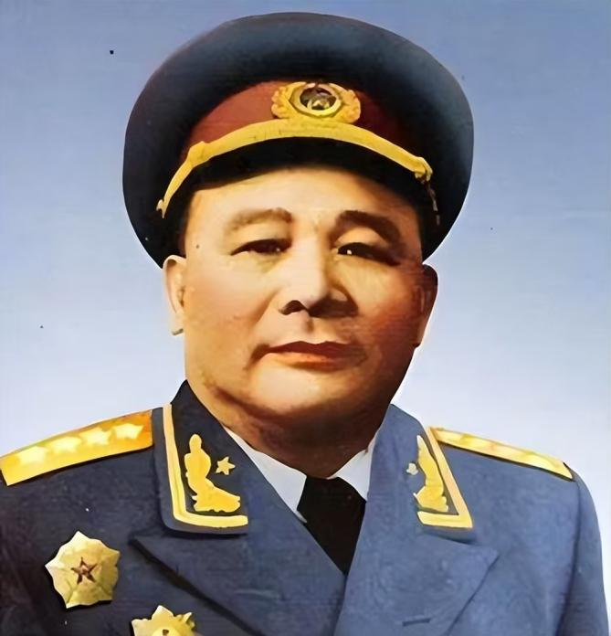

徐海东旧居为1925年前后建造的和风欧式建筑，现存地上二层、地下一层，建筑面积528平方米。1947年至1956年间，徐海东大将因肺部疾病在此疗养，期间多位党和国家领导人曾前往探望。该建筑于2003年被大连市政府列为第五批市级文物保护单位，2022年入选辽宁省第二批不可移动革命文物名录。文旅部门通过数字化宣传手段推广其红色文化价值，并将其纳入红色旅游线路规划。
建筑主体为和风欧式混合风格建筑，地上二层、地下一层，建筑高度约8米，采用砖混结构建造。平面布局包含疗养起居空间及医疗辅助功能区，外立面保留原始拱券窗与石材装饰。
徐海东（1900—1970），男，原名徐元清，湖北黄陂（今大悟县）徐家桥村人，中国人民解放军大将，中国共产党的优秀党员，中国人民解放军高级将领、卓越的军事家，久经考验的无产阶级忠诚战士，人民解放军36名军事家之一，中共第八届、九届中央委员。
徐海东具有高超的军事指挥艺术和善于把握全局的领导才能。毛泽东称赞他是“对中国革命有大功的人”，“工人阶级的一面旗帜”。邓小平评价他“对党有一颗红心”。1955年，徐海东被授予一级八一勋章、一级独立自由勋章、一级解放勋章。
 ← 返回大连地图